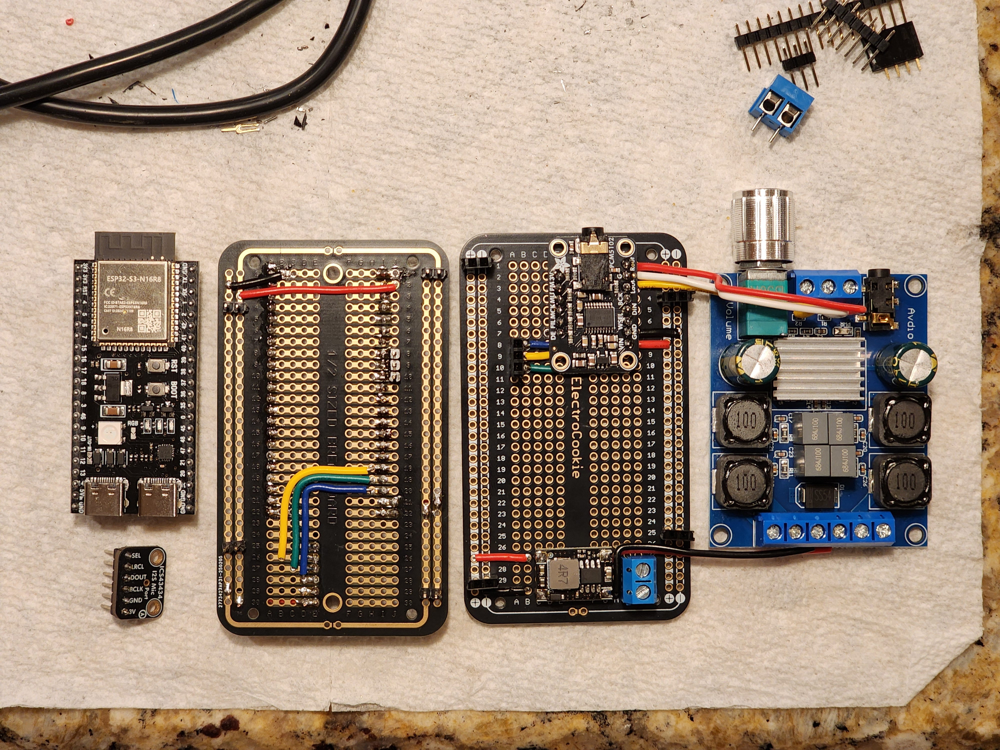

When I think of a smart home, I think of the Iron Man movies, specifically Jarvis. A voice assistant like Jarvis adds the effect of a high-tech future where my An assistant can control my home for me.
I set off to accomplish this with the power of Home Assistant. For those who are unaware, Home Assistant is like Google Home or Apple Home, but completely self-hosted, offline, and subscription-free. What more could a nerd ask for! With Home Assistant, You can integrate thousands of devices and use complex automation to achieve outcomes that no other smart home platform is currently capable of. Home Assistant, over the The last few years, they have been working on their own voice assistant, and here's the catch: This voice assistant pipeline is completely open and accessible for any developer to build their own smart home voice assistants.
So that's what I did.
To learn more about this project, my progress, and how you can make your own voice assistant, check out the link below:
JARVIS demo on Linkedin